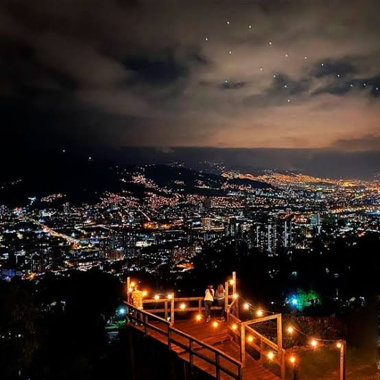
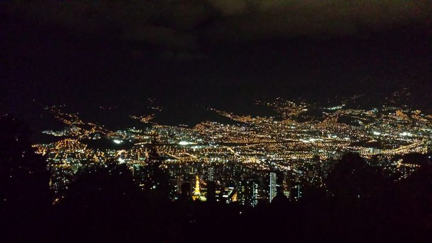

Nuevo · Jueves a sábado
Rueda Nocturna
Descubre Medellín en bici cuando se encienden las luces
3 rutas RecorridosNuestras Rutas
 Nivel Intermedio
Nivel Intermedio
Ruta Luces del Centro
- Distancia 18 km
- Duración 2.5 horas
- Punto de encuentro Parque Poblado

Nivel PrincipianteRuta Miradores de la ciudad
- Distancia 12 km
- Duración 1.5 horas
- Punto de encuentro Parque Berrío

Nivel AvanzadoRuta Luna en las Palmas
- Distancia 26 km
- Duración 3.5 horas
- Punto de encuentro San Lucas